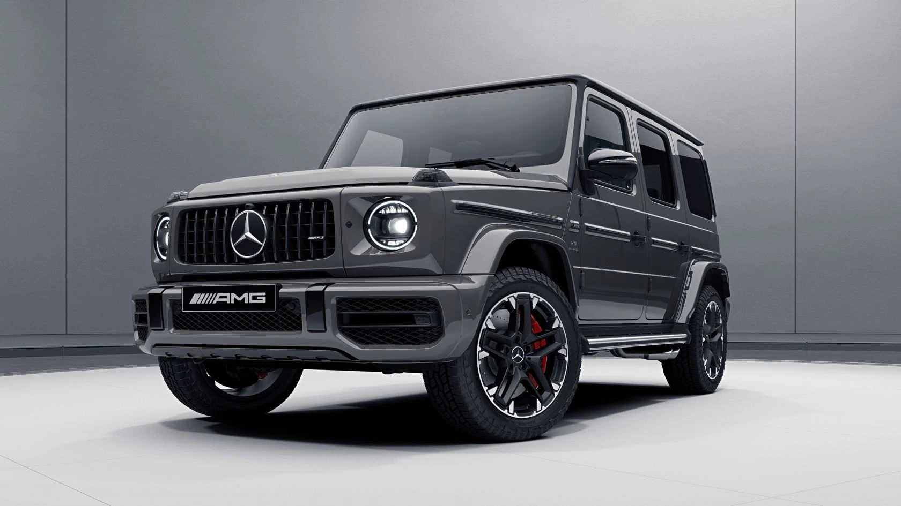
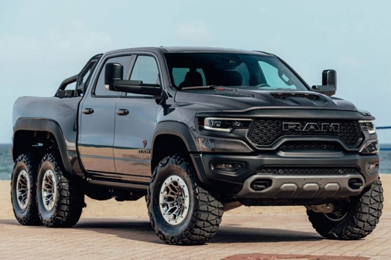
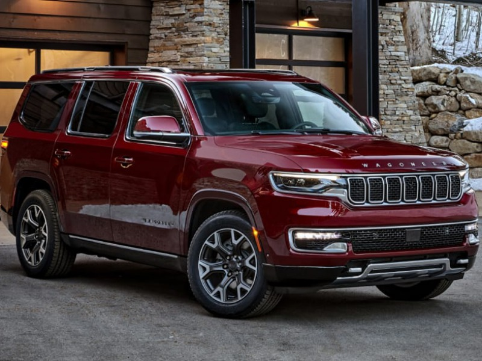

G osztályú Mercedes
A Mercedes-Benz G osztály vagy G-Wagen neve a terepjáró német megfelelőjéből, a Geländewagenből származik. Négykerékmeghajtású terepjáró, melyet a német Mercedes-Benz autógyártó cég készít. Mohammad Reza Pahlavi iráni sah, a Daimler-Benz egyik részvényesének a javaslatára, katonai célokkal kezdték el gyártani. A Steyr-Daimler-Puch állt neki a megtervezésének.[1] A G osztály gyártása 1979-ben, a 460-as sorozattal vette kezdetét.
Ram 6x6
A Mercedes-Benz G osztály vagy G-Wagen neve a terepjáró német megfelelőjéből, a Geländewagenből származik. Négykerékmeghajtású terepjáró, melyet a német Mercedes-Benz autógyártó cég készít. Mohammad Reza Pahlavi iráni sah, a Daimler-Benz egyik részvényesének a javaslatára, katonai célokkal kezdték el gyártani. A Steyr-Daimler-Puch állt neki a megtervezésének.[1] A G osztály gyártása 1979-ben, a 460-as sorozattal vette kezdetét.
Wagoneer
A Jeep Wagoneer és a Grand Wagoneer a Stellantis Észak-Amerika Jeep részlege által gyártott teljes méretű SUV-k.[1] Mindkét járművet 2021 márciusában mutatták be a 2022-es modellévre. Mindkét modell a Jeep márka nélkül kerül forgalomba, és nincsenek felszerelve Jeep emblémával, mivel a cég mindkét modellt a Jeep márka "prémium kiterjesztéseként" írja le.[2] A 2022-es Wagoneer és a Grand Wagoneer gyártása 2021 első felében kezdődött meg a Warren Truck Assembly-ben.[3] A Wagoneer elektromos változata 2025-ben várható